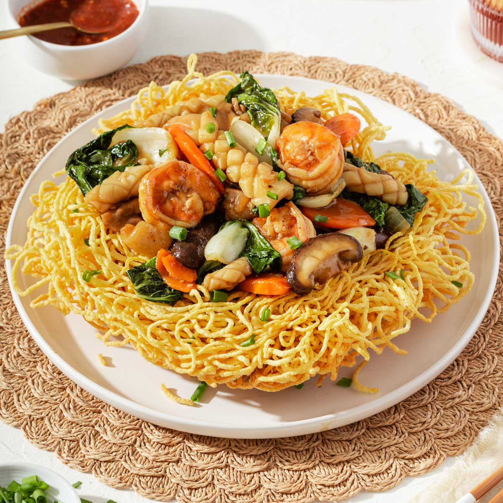

Hủ Tiếu Recipe  Ingredients for stir fry 1 lb (450g) fresh egg noodles or dried noodles (yellow Chinese-style noodles work best) Vegetable oil (for frying) 1/2 lb (225g) chicken breast, pork, or beef, thinly sliced 1/2 lb (225g) shrimp, peeled and deveined 2 cups mixed vegetables (broccoli, carrots, bok choy, baby corn, bell peppers) 2 cloves of garlic, minced 1/4 cup of sliced onions Ingredients for the Noodles and toppings 1 lb (450g) hủ tiếu noodles (flat rice noodles) or substitute with rice vermicelli or pho noodles Bean Sprouts Chopped green onions Fresh cilantro Sliced lettuce Fried Shallots Lime wedges (squeeze in the broth for taste) Chili slices Quail eggs Fish balls Fried tofu Directions Prepare the crispy noodles: Cook the noodles according to package instructions, but slightly undercook them (they will fry later). Drain and pat dry. Heat vegetable oil in a deep skillet or wok over medium-high heat. Spread the noodles evenly into the hot oil in batches, frying until golden and crispy. Remove and drain on paper towels. Prepare the stir-fry: Heat a wok or large pan over medium-high heat with a bit of oil. Add minced garlic and sliced onion; stir-fry until fragrant. Add the meat and cook until no longer pink. Toss in the shrimp and cook until they turn pink. Remove and set aside. Add the mixed vegetables to the wok and stir-fry for 2-3 minutes until tender-crisp. Make the sauce: Combine oyster sauce, soy sauce, fish sauce (if using), sugar, and chicken stock in a bowl. Pour the sauce into the wok with the vegetables. Bring it to a simmer. Add the cornstarch slurry to thicken the sauce, stirring constantly. Adjust seasoning to taste. Combine and serve Place the crispy noodles on a serving plate. Pour the stir-fry mixture over the noodles. The sauce will soften the noodles slightly while keeping the edges crispy. Garnish with green onions, cilantro, and fried shallots, if desired.